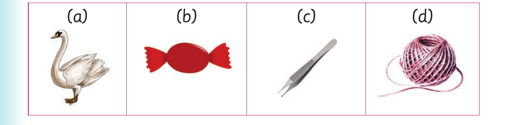

Words with sw and tw consonants - continued
Activity 1
1. Name the following pictures:

Table contents. Picture items are labelled a, b, c, d.
Activity 2
1. Read the following words aloud / using sign language:
| swim | swipe | swell | swamp | swan | sweat | sweet | switch |
|---|---|---|---|---|---|---|---|
| swap | swing | swab | swag | swift | swash | swear | swine |
| tweezers | twine | twice | twig | twist | twitch | tweet | twang |
2. Read the following sentences aloud / using sign language: (a) It is unsafe to swim in a natural pond. (b) Can we swap our exercise books? (c) Your hand will swell if you hit a table. (d) Kulwa and Dotto are twins. (e) We eat ugali and sweet potatoes twice a week.